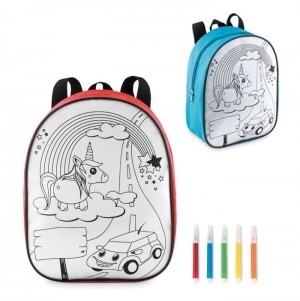

Em resumo
Ideias para alunos, docentes, famílias e equipas escolares, ajustadas à idade e à atividade concreta. As famílias apresentadas são possibilidades a avaliar, não artigos obrigatórios.
Contexto em imagens


Destinatários e necessidades
Alunos
A idade, a autonomia, a atividade e as instruções de utilização precisam de ser consideradas antes de escolher qualquer artigo.
Docentes e equipas escolares
Podem ter necessidades diferentes das dos alunos, como materiais de apoio, identificação ou organização.
Famílias e visitantes
Em dias abertos ou cerimónias, importa perceber se o material é informativo, participativo ou uma lembrança.
Ocasiões, locais e épocas
Início do ano letivo
A ocasião destina-se a alunos, a docentes e a famílias e pode decorrer em contextos como escola, sala de aula ou sessão de acolhimento. O momento — antes do início definido pela escola; datas e organização variam consoante o calendário e a instituição — ajuda a enquadrar o objetivo de acolher ou orientar participantes sem pressupor que todos precisam do mesmo material.
Dia aberto ou atividade escolar
A ocasião destina-se a alunos, a famílias e a equipas escolares e pode decorrer em contextos como entrada, salas, pátio ou espaço da atividade. O momento — ao longo do ano, segundo o calendário publicado pela escola — ajuda a enquadrar o objetivo de apoiar a participação e distribuir materiais no local adequado.
Fim do ano letivo, encerramento ou cerimónia de conclusão
A ocasião destina-se a alunos, a docentes e a famílias e pode decorrer em contextos como escola ou espaço escolhido para a cerimónia. O momento — no encerramento do ano letivo ou percurso; data definida pela instituição — ajuda a enquadrar o objetivo de assinalar a ocasião, distinguindo participantes, famílias e equipa.
Dia Internacional da Educação
A ocasião destina-se à comunidade educativa e pode decorrer em contextos como escola ou atividade educativa. O momento — 24 de janeiro, data assinalada pelas Nações Unidas Fonte — ajuda a enquadrar o objetivo de ligar uma atividade ao tema da educação; a data não implica oferecer brindes.
Famílias de artigos a avaliar
Alunos
Objetivo
Atividade e participação
Famílias a avaliar
Material de escrita, Material de desenho,
Sacos para atividades
Docentes e equipas escolares
Objetivo
Organização e apoio
Famílias a avaliar
Cadernos, Material de escrita, Artigos de
identificação
Famílias e visitantes
Objetivo
Informação e acolhimento
Famílias a avaliar
Sacos para documentação, Material
informativo, Artigos de identificação
Utilização e distribuição
- Organize a entrega por turma, idade, atividade ou papel; evite deixar materiais acessíveis sem supervisão quando a escola considere que isso não é adequado.
- Antes de selecionar algo para alunos, peça à escola que avalie a faixa etária, os componentes, as instruções e o contexto de utilização.
- Confirme as datas diretamente com a escola e consulte o calendário escolar aplicável; início, interrupções e conclusão não são universais.
O que confirmar antes de escolher
- Que idades e grupos vão receber o artigo? Há participantes que não devem receber determinada variante?
- A escola reviu instruções, componentes e condições de utilização previstas para a idade?
- O artigo é para uso dos alunos, apoio aos docentes ou entrega às famílias?
- Como será distribuído em sala, no pátio ou durante uma cerimónia?
- A família de artigos é apenas uma possibilidade a avaliar; não demonstra adequação, segurança ou conformidade para crianças.
Perguntas frequentes
Um artigo destinado a adultos pode ser distribuído a alunos?
Não assuma essa adequação. A escola deve avaliar a idade, as instruções e o uso previsto antes de decidir.
O início e o fim do ano letivo têm datas iguais em todas as escolas?
Não trate as datas como universais; confirme o calendário em vigor e a informação publicada pela escola.
O Dia Internacional da Educação implica uma oferta?
Não. 24 de janeiro é uma data de sensibilização; uma atividade ou oferta só deve ser considerada se servir um objetivo educativo concreto.